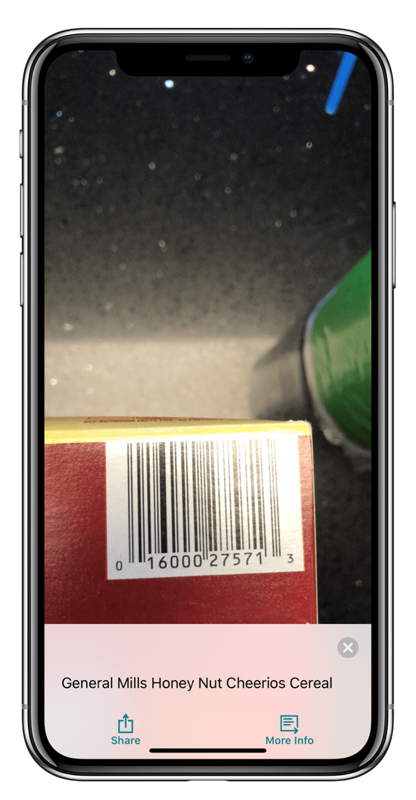

Seeing AI app by Microsoft allows for the visually impaired to see with their iPhone
By: Daniel Garcia
Microsoft’s AI Research team came up with an app that harnessed the power of Artificial Intelligence to have your phone see and speak the world around you.
Seeing AI combines the power of machine learning, artificial intelligence, and computer vision to allow the visually impaired to use their iPhone's camera to speak objects using the iPhones text-to-speech engine. According to Microsoft, Seeing AI can speak short text, documents, products with UPC barcodes, people (along with their mood), scenes, currency, light, color, and handwriting.
The Seeing AI app uses the iPhone’s VoiceOver system which is a text-to-speech engine by Apple. This means that the voice can be changed in the iPhone's Settings app or within the Seeing AI app itself.
The "Person" function can be setup within the "Face Recognition" setting. Having your iPhone learn a new person is very easy. You simply take 3 images of the person and the machine learning will take place. If you take a picture of someone who the app doesn’t know it will estimate the age, gender, hair color, and mood of that person.
The "Currency" function is able to read $US Dollars, $Canadian Dollars, £ British pounds, and € Euros. It is unknown if Microsoft will support more currencies in the coming months.
This article can also be found on 42Fifty